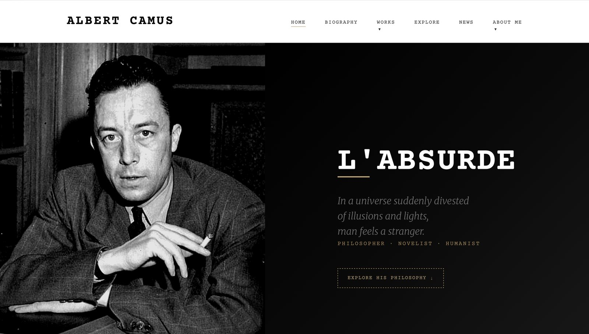
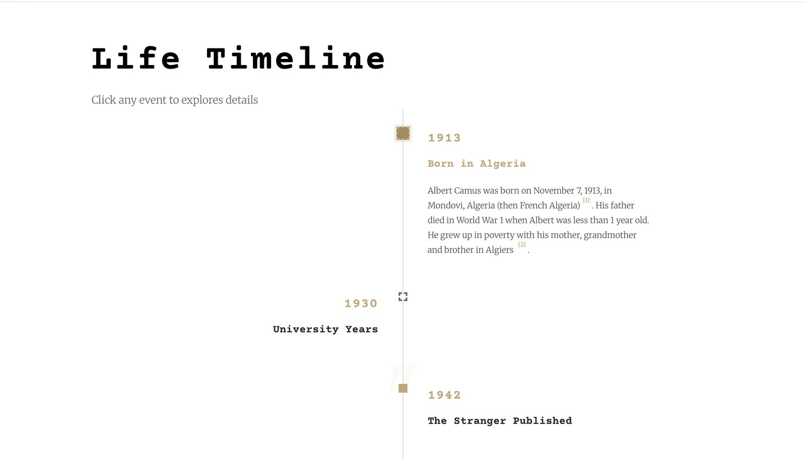
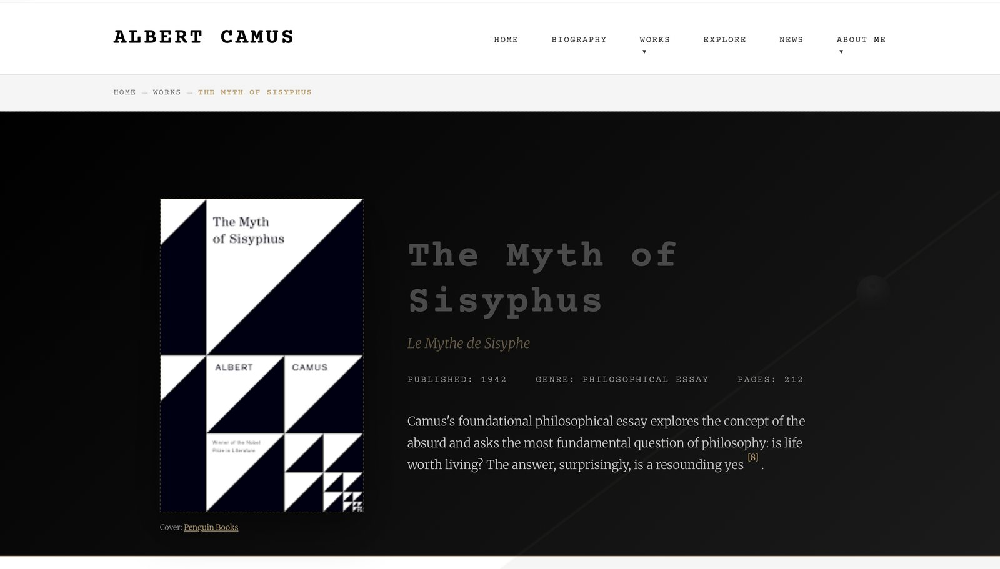
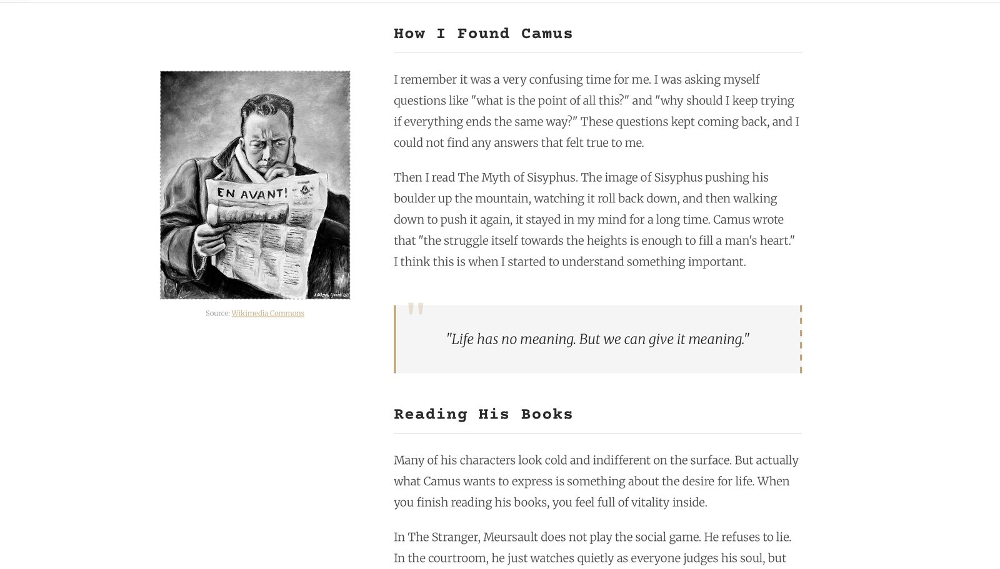
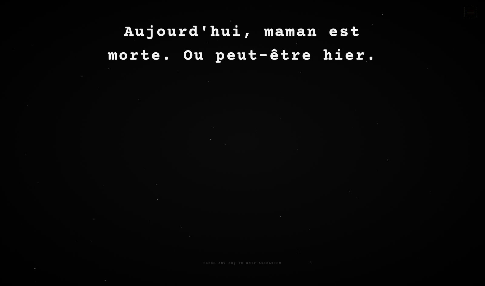

Case File #003
Albert Camus
An eleven-page responsive site on the life and work of Albert Camus, built from scratch in HTML, CSS and JavaScript. A design token system, dark mode, accessible interactive components, and forty-four commits of getting it wrong before getting it right.
Concept
Entering the absurd
Camus argued that life has no inherent meaning, and that recognising this is the beginning of freedom rather than the end of hope. A site about him shouldn’t open with a hero image and a subscribe box.
So it opens on a black screen with one line typing itself out in French: Aujourd’hui, maman est morte. Ou peut-être hier. The first sentence of L’Étranger. The English translation fades in underneath, then the thesis, then a single door: Enter the Absurd.
Nothing else is on that page. The visitor has to sit through about four seconds before they can go anywhere, which is the point, and also why there is a “press any key to skip” line in the corner. Making people wait is a design decision; trapping them is a bug.
Approach
Five decisions
Fifty tokens before any page was styled
Why the system came first
Every colour, font, transition curve and alpha level lives in CSS
custom properties at the top of the stylesheet, including the
intermediate steps, like eight preset text opacities rather than
scattering rgba()
values through 3,600 lines.
This is what made dark mode a twenty-line change instead of a rewrite.
Under prefers-color-scheme: dark
the same token names are reassigned and every one of the eleven pages
follows, because no component ever referenced a raw hex value.
Typing speed that isn’t constant
A small detail that carries the whole openingA typewriter effect at a fixed interval reads as a machine. The entry animation varies the interval randomly around 70ms, pauses 100ms at spaces, and holds for 350ms at punctuation.
That last one does the work. The comma in “Ou peut-être hier” is where the narrator’s indifference lands, and a third of a second of silence there makes the line feel written by someone rather than printed by something.
One observer pattern, two jobs
Reusing the mechanism rather than the code
IntersectionObserver
drives both the scroll reveals and the image lazy-loading. Reveals read
a data-delay
attribute so elements in a group stagger; images swap
data-src
into src
only once they approach the viewport.
Both unobserve themselves after firing. On a site with this many images across eleven pages, leaving observers attached to everything is how you build a scroll that stutters.
Three input methods for one carousel
Where most hand-built carousels failThe book carousel responds to arrow buttons, keyboard left/right, dot navigation, clicking a book directly, and touch swipe. Building all five paths through a single state function meant they couldn’t drift out of sync with each other.
The bibliography accordion works the same way: one entry open at a
time, aria-expanded
maintained on every toggle, so the component reports its own state
rather than only looking like it changed.
Committing the mistakes
Why the Git history is part of the workForty-four commits, and the messages are honest: fix the bug (works), mobile responsive mistakes change, compress images, accessibility, dark mode color.
I could have squashed it into something tidier. I’d rather show the actual shape of the build: a draft, then accessibility, then responsive fixes, then performance, then a second pass on colour once dark mode revealed what the light palette had been hiding.
Systems
What’s in it
Eleven pages
Plus dedicated pages for The Stranger, The Myth of Sisyphus, A Happy Death, and an essay on why Camus.
Interactive timeline
Click a year to expand its detail. Height animates from measured
scrollHeight
rather than a guessed maximum, then scrolls itself to centre.
Dark mode
Full token remap under prefers-color-scheme.
The sand accent lightens from #C4A574 to #E8B86D so it holds contrast on
black.
Accessibility
Every collapsible component reports state. The entry animation can be skipped with any key.
Typography
Courier Prime for headings, Merriweather for body. A typewriter face for a writer, a serif built for screen reading for the reading.
Performance
Modern formats where the browser supports them, with lazy loading across the image-heavy pages.
Interface
The site





Process
Before any code
The site was planned on paper first: a sitemap of eleven pages, wireframes for the entry, home, works and mobile layouts, and a written brief naming the concept before a single decision about colour.
Naming the concept: Absurdist Minimalism
The brief set the rule the rest of the design had to follow. Start cold and restrained in black, white and grey, then let sand and gold appear as the visitor goes deeper, matching the way Camus moves from confronting an indifferent universe to arguing for living anyway.
Having that written down meant later decisions were tests rather than preferences. A warm accent on the entry page would have broken the rule, so it did not happen.
Research in two directions, then a rejection
I collected brutalist web design first, because raw typewriter type on stark black reads as honest rather than pretty, which felt correct for the absurd. Then I collected minimalist reference: large typography with a great deal of empty space.
The brutalist direction lost. It was dark and heavy where Camus is actually full of Mediterranean light, and the calm, breathable layouts turned out to carry the philosophy better than the aggressive ones did. Reference collected and then argued against is worth more than reference that only confirms the first instinct.
Two typefaces, two jobs
Courier Prime for headings, because a 1940s typewriter face is what Camus’ own manuscripts would have come off. Merriweather for body, because it was drawn for screen reading and the site asks people to read at length.
The pairing carries the period without making the reading harder, which a single typewriter face throughout would have done.
Wireframing mobile alongside desktop
The home page was wireframed twice, desktop and mobile, before any CSS. Deciding in the sketch that the three concept cards collapse into a single column meant the responsive behaviour was a plan rather than a repair.
Reflection
What I’d change
- Dark mode has no manual override. It follows the operating system and gives the visitor no say. There’s a commit called compress images but none called theme toggle, and that’s the gap I’d close first.
- The compression pass didn’t go far enough. A few images are still around half a megabyte. I converted the worst offenders and stopped when the page felt fast on my own connection, which is not the same as being fast.
- 3,600 lines in one stylesheet. The token block at the top keeps it navigable, but it should have been split by page or component. I know this because I started scrolling to find things instead of searching.
- No build step. Nothing is minified and the CSS ships every rule to every page. Fine at this scale, wrong as a habit.